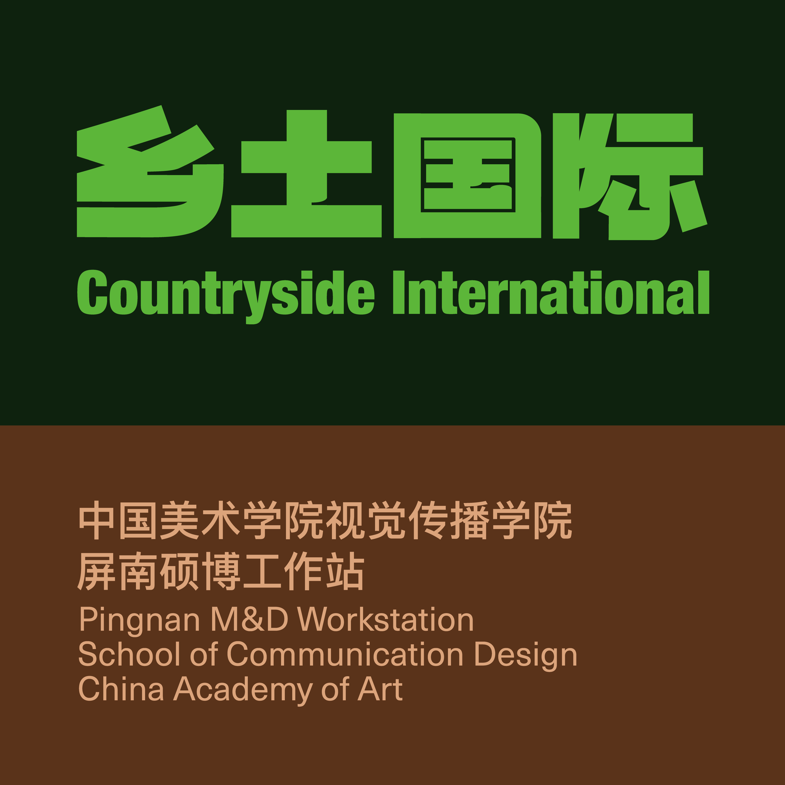

乡土人物、国际参与者与美院师生，在具体实践中相遇。
40 / LOCAL CO-CREATORS大食物共创者以肉、蛋、禽、奶、鱼、果、菌、茶等食物与劳动属性，连接四坪村的生活网络。乡土＋国际乡土实践者、国际教师与学生温铁军、周芬芳、潘家恩、杨林、潘国老，以及研习营的国际导师与学生。CAA美院师生团队以展览、教学与研究为线索持续参与四坪实践。在内容索引中浏览 ↗
CHINA · FUJIAN · PINGNAN · SIPING
人们一次次来到四坪，在共同学习中，建造持续生长的现场。
01—04 / FIELD CONNECTIONS人物、实践与共同学习
场所慢慢生长， 学习一次次发生。
从人物、项目、活动与多种成果进入同一个乡土现场。每一次相遇，都留下能够继续阅读与接续的线索。
从一座展馆、一条古道到一处小院，记录研究与实践的过程。
2023 —大食物馆：策划与在地实践以食物连接生态、生产与生活。在屏南四坪村，老宅改造、内容研究与地方共创，共同构成大食物馆的实践。2025 —茶盐古道：山海互换沿着历史商贸通道，研究食物互换、地方器物与农业景观，探索“以乡为馆”的叙事路径。2025 —乡土国际小院改造小院为学生在地生活提供居住空间。记录它从既有建筑到驻地基地的设计与改造过程。在内容索引中浏览 ↗会议、研习营与共同学习，每一次相遇都有自己的问题。
2025.11.06 — 11.09以社会为现场2025社会创新设计国际会议暨米兰三年展中国展区闭幕会议，在福建屏南展开。社会设计、社会技术、社会叙事与社会生态构成四大议题。2025.11.09 — 11.202025乡村振兴硕博研习营以乡为馆，以食为媒。围绕生态、产业、社会、文化与空间，学员与导师在屏南共同开展五组短期实践。2026.09 / 计划 · Planned屏南—杭州大路学坊《原乡社》汇报提出2026年9月的联合教学安排，涉及土耳其及RCA相关人员。具体名单与实际开展情况待补充。在内容索引中浏览 ↗图像、展览、田野记录和研究，可以从不同方向进入同一段实践。
2025以食为天：米兰三年展从屏南田野到米兰展场，以食物链为线索呈现生态、生产与生活之间的联系。2025食图・食影・食册图解、影像与折页，让食物研究以不同媒介被阅读和分享。2025.09“以食为天”全国竞赛获奖团队以大食物馆及相关乡建实践参加第三届中国研究生“美丽中国”创新设计大赛。日期未注明 / Undated图书馆片段与公共种子THE AMEND PROJECT: PINGNAN。通过在地观察、材料再用与共同制作，探索社区图书馆与小型公共空间的可能。在内容索引中浏览 ↗FIELD ATLAS每个片段，都能通向整个现场
从一张影像， 进入一种关系。
照片、手稿与材料记录连接着地点、人物和行动。点击一个片段，查看它属于哪一次相遇。